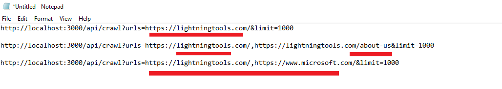
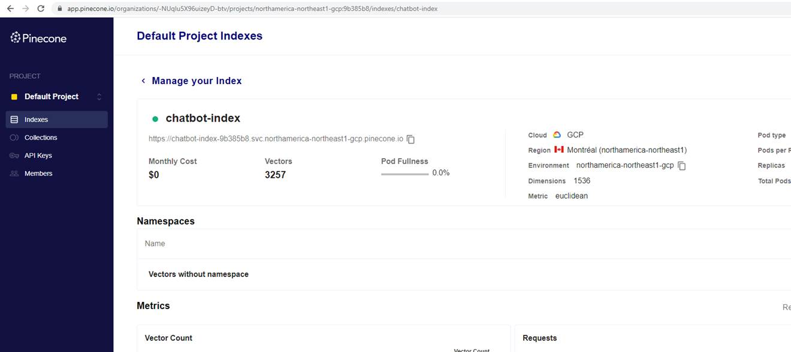
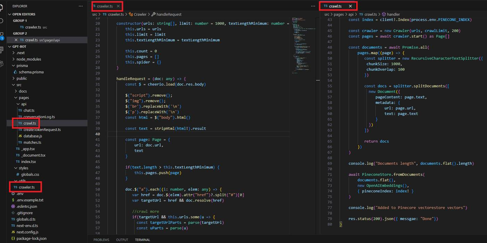
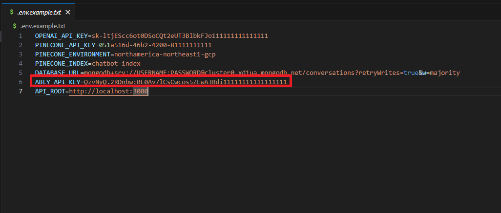
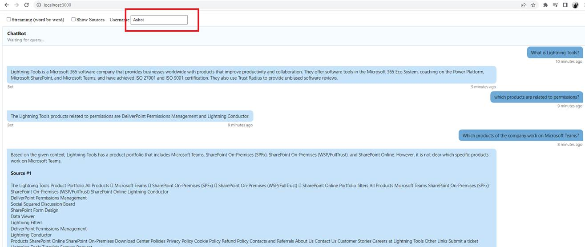
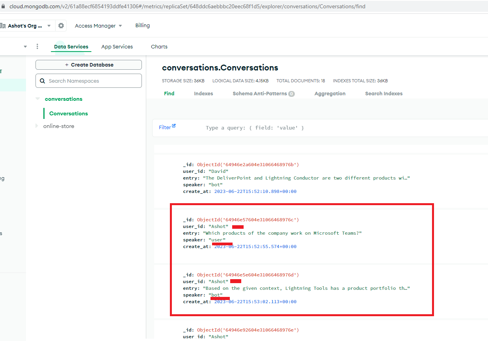
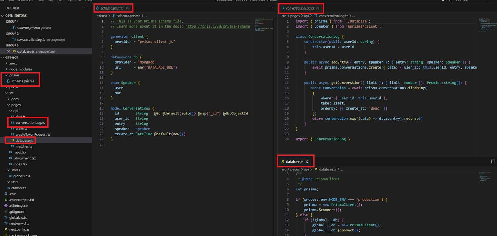

AI Chatbot
Video Link: https://youtu.be/TkZCDJJrQqw
GitHub Repository: https://github.com/Ashot72/AI-Chatbot
This Next.js application is very similar to my Langchain Document Helper https://github.com/Ashot72/LangChain-Documentation-Helper application. You can
read about LangChain, Vector database such as Pinecone, embeddings etc.

Figure 1
We should crawl a single site or multiple sites. The sites can be of the same domain, and the app will not crawl the pages that have already been crawled. You can also specify
different domains with commas. In this application I will crawl a single site which is https://lightningtools.com/ the company I work for.

Figure 2
We crawl the site and put into Pinecone vector database.

Figure 3
You can look at crawl.ts and crawler.ts files for crawling.
LLMs are stateless, which means they have no concept of memory. That means that they do not maintain the chain of conversation on their own. We need to build
a mechanism that will maintain conversation history that will be part of the context for each response we get back from the chatbox.
For that reason, we use ably https://ably.com/
Ably is a real-time delivery platform that provides infrastructure and APIs for developers to build scalable and reliable real-time applications. It can be used to handle real-time
communication, data synchronization, and messaging across various platforms and devices. As out chatbot gains more users, the number of messages exchanged between the bot
and the users will increase. Ably is built to handle such growth in traffic without any performance degradation.
Ably also ensures message delivery and provides message history, even in cases of temporary disconnections or network issues. Implementing this level of reliability using only
WebSockets can be challenging and time-consuming.
Ably also provides built-in security features like token-based authentication and fine-grained access control, simplifying the process of securing chatbot's real-time communication.

Figure 4
You should go to Ably site and create a free API KEY.

Figure 5
When you start the chat, you must specify a username. This name should be unique in general, as with this name you can access the entire conversation log
and also display it on a screen. In a real app, a user must be authenticated, and username can be their unique email address, ensuring no two users can have the same usernames.

Figure 6
We use https://www.mongodb.com/atlas/database a MongoDB cloud database, to store and register each user conversation. This allows you to enhance the app and
display users’ conversation logs on the screen.

Figure 7
We use Prisma ORM https://www.prisma.io/ to access MongoDB.